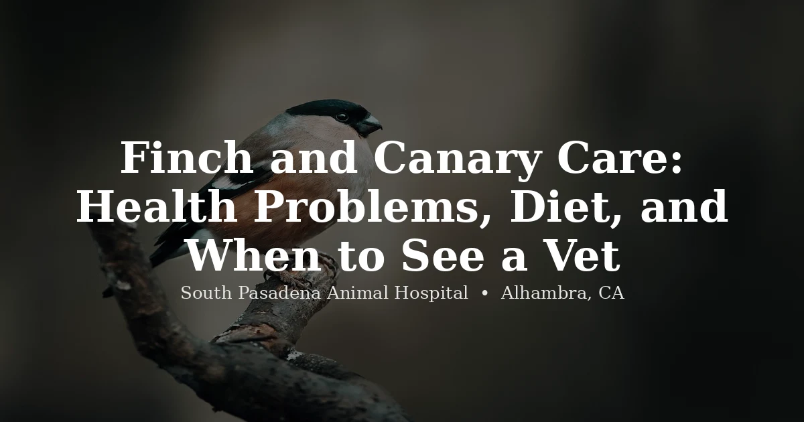

June 12, 2026 · 7 min read
Finch and Canary Care: Health Problems, Diet, and When to See a Vet in Alhambra

Finches and canaries occupy an odd space in avian medicine. Their owners often assume they're low-maintenance — smaller than parrots, less expensive, easier to keep. And while they are genuinely less demanding in some ways, they're not hardier. They get seriously sick. They hide it well. And because veterinary care for small birds is less discussed than care for parrots, many owners don't know what to watch for until a bird dies unexpectedly.
We see finches and canaries in our clinic regularly. This post covers what we find useful to explain to owners: housing, diet, and the health problems that show up most consistently.
Housing: Flight Cage vs. Small Cage
The most common housing mistake we see is a cage that's too small. Finches and canaries are active, flying birds — they're not climbers like parrots. They need horizontal distance to fly. A "flight cage" — at minimum 30 to 36 inches wide — is the appropriate standard for even a single pair. Taller cages with minimal horizontal length are good for parrots, not for these birds.
The cage should contain multiple perches at different heights, natural branch perches (varying diameter helps maintain foot health), and — for finches — nesting materials or a nesting box if you want the birds to breed. Avoid sandpaper perch covers, which abrade the feet. Keep the cage away from drafts and from kitchens — Teflon and other non-stick coatings emit fumes toxic to birds when overheated.
Social needs
Most finch species — zebra finches, society finches, Gouldian finches — must be kept in pairs or small groups. A lone finch will decline. Canaries are different: male canaries are territorial and often sing less or stop singing when they can see another male. Males can be kept alone or paired with a female. Female canaries can often be housed together.
The rule of thumb: if you keep one finch, keep two. If you keep one male canary, that's fine — but ensure he can hear sounds and see activity even if he's alone in his cage.
Diet: The Problem With Seeds
Seed mixes are convenient and widely sold. They're also an incomplete diet. Finches and canaries fed a seed-only diet typically eat selectively — picking out the highest-fat seeds and leaving the rest. Over months and years, this leads to vitamin A deficiency, iodine deficiency, calcium deficiency, obesity, and fatty liver disease.
A high-quality pelleted diet — Harrison's Bird Foods or Zupreem Natural are the most commonly recommended brands — provides balanced nutrition and eliminates selective feeding. Transitioning seed-addicted birds to pellets takes time and patience; birds recognize pellets as food more readily when pellets are mixed with seed and the seed proportion gradually reduced over several weeks.
Supplements and fresh foods
- Dark leafy greens: kale, romaine, bok choy — 2–3 times per week
- Egg food: a soft food made with cooked egg, especially valuable during molting and breeding
- Cuttlebone or mineral block: provides calcium and iodine, especially important for canaries
- Fresh water changed daily — small birds are highly susceptible to bacterial contamination from standing water
Foods to avoid: Avocado, onion, garlic, chocolate, and fruit pits are toxic to birds. Iceberg lettuce has minimal nutritional value. High-fat treats like millet can be offered occasionally but shouldn't displace the main diet.
Common Health Problems
Air Sac Mites
Air sac mites (Sternostoma tracheacolum) are among the most serious conditions we see in canaries, and they're underdiagnosed because early signs are subtle. The mites live in the trachea, lungs, and air sacs, causing progressive respiratory obstruction. Early signs include a clicking sound with breathing, a subtle change in the quality of the song, and mild open-mouth breathing after activity. By the time a bird is clearly in respiratory distress — tail bobbing, gasping, resting with wings held slightly away from the body — the infestation is typically advanced.
Gouldian finches are also commonly affected. A vet can prescribe an effective treatment when it's started promptly. Any canary whose song changes, or who develops a wheeze or click, should be seen by a bird vet within 48 hours.
Seek same-day veterinary care for any bird showing open-mouth breathing, gasping, tail-bobbing at rest, collapse, egg binding signs (fluffed up on cage floor, straining), or any bird that appears unable to perch. Small birds can deteriorate and die within hours once they stop compensating.
Scaly Face Mites
Scaly face mites (Knemidokoptes pilae) cause crusty, honeycomb-textured growths around the beak, cere (the fleshy area above the beak), and sometimes the legs and vent area. They're more commonly seen in budgerigars but do occur in canaries. The condition progresses slowly — most owners first notice a slight crusty texture on the beak area that gradually becomes more pronounced. A vet can prescribe a topical treatment that works well. Left untreated, the beak can become permanently deformed.
Feather Cysts
Feather cysts are a particular problem in canaries — especially Norwich canaries and other heavily-feathered breeds developed through selective breeding. A cyst forms when a growing feather fails to emerge from the follicle properly and curls back under the skin, forming a firm, oval lump. They most commonly appear on the wings. Cysts don't resolve on their own and can become infected or ulcerated. Surgical removal of the cyst and the follicle by a veterinarian is the treatment; without follicle removal, the cyst recurs. Birds with a history of cysts should be checked at every wellness exam.
Egg Binding
Egg binding is a veterinary emergency. A female that cannot pass a formed egg will appear fluffed up, sitting on the cage floor, possibly straining with her abdomen. She may be unable to perch. The egg compresses blood vessels and major nerves supplying the legs and cloaca — untreated, a bird can die within 12–24 hours. Risk factors include calcium deficiency (the most common cause), a diet low in calcium and vitamin D, breeding in cold temperatures, obesity, and oversized eggs.
Prevention: ensure females have access to cuttlebone or calcium supplementation and are on a balanced diet before and during breeding season. If you suspect egg binding, keep the bird warm (85–90°F) and get to a bird vet immediately. Do not try to manually express the egg at home.
Goiter from Iodine Deficiency
Canaries on seed-only diets are at significant risk for iodine deficiency, which causes enlargement of the thyroid gland (goiter). The enlarged gland compresses the trachea, causing a high-pitched squeak or wheeze — owners often describe the sound as a "clicking" that they initially mistake for normal canary vocalization. Progressive compression causes respiratory distress. Treatment involves iodine supplementation and, in severe cases, supportive care. Preventing this condition is straightforward: a cuttlebone, iodine-fortified mineral block, or a pelleted diet provides adequate iodine.
Bacterial and Fungal Respiratory Infections
Beyond air sac mites, bacterial and fungal respiratory infections are common in finches and canaries, particularly in birds kept in overcrowded conditions, poor ventilation, or high humidity. Aspergillosis — a fungal infection — is a consistent finding in immunocompromised birds. Signs overlap with other respiratory conditions: wheezing, tail-bobbing, open-mouth breathing, voice changes, and lethargy. Diagnosis requires veterinary evaluation; treatment depends on whether the cause is bacterial (antibiotics) or fungal (antifungals, which require longer treatment courses).
When to See a Vet
Small birds are prey animals at the extreme end of illness concealment. A finch or canary that looks visibly unwell in the morning may have been sick for days already. Don't wait to see if it improves on its own.
Bring your bird in promptly for: any respiratory change including voice change, wheeze, or open-mouth breathing; a bird sitting on the cage floor; significant fluffing at times other than sleep; weight loss (weigh birds on a kitchen scale weekly — a gram or two of weight loss in a small bird is significant); any swelling anywhere on the body; or a female bird that may be egg-bound. Our bird vet team in Alhambra sees finches, canaries, and other small birds — find details on our services page.
Frequently Asked Questions
Do finches and canaries need to go to the vet?
Yes. Many owners assume small birds don't need veterinary care the way parrots do, but finches and canaries are prone to serious conditions that benefit from early intervention — air sac mites, respiratory infections, egg binding, and feather cysts among them. A new bird should have a baseline exam within the first few weeks of ownership. Annual wellness exams are recommended even for birds that appear healthy, since small birds hide illness effectively and conditions are much easier to treat when caught early.
What are air sac mites in canaries?
Air sac mites (Sternostoma tracheacolum) are parasitic mites that live in the respiratory tract — the trachea, lungs, and air sacs. They're common in canaries and Gouldian finches. Infected birds develop a characteristic clicking or wheezing sound, open-mouth breathing, tail-bobbing, and progressive respiratory distress. The condition can be fatal if untreated. Treatment with ivermectin or moxidectin is effective when started promptly. Any canary with a change in voice, wheezing, or respiratory signs should be seen by a bird vet as soon as possible.
What causes feather cysts in canaries?
Feather cysts develop when a growing feather cannot exit the follicle properly and curls back on itself beneath the skin, forming a firm, waxy lump. They're especially common in Norwich and other large-feathered canary breeds due to selective breeding. Feather cysts don't resolve on their own and can become infected. Treatment is surgical removal of the cyst and follicle. The condition can recur in adjacent follicles, particularly in predisposed breeds.
Why is a seed-only diet a problem for finches and canaries?
Commercial seed mixes are high in fat and low in many essential nutrients, including iodine, vitamin A, and calcium. Birds fed seed-only diets are at increased risk for iodine deficiency (which causes goiter in canaries), vitamin A deficiency (linked to respiratory and immune problems), obesity, and liver disease. A high-quality pelleted diet — Harrison's Bird Foods or Zupreem Natural are well-regarded options — provides balanced nutrition. Transitioning seed-addicted birds to pellets takes patience but makes a measurable difference in long-term health.
What is egg binding in finches and canaries?
Egg binding occurs when a female bird is unable to pass an egg that has formed. It's a medical emergency. A bird that is egg-bound will appear fluffed up, sitting on the cage floor, straining with little result, and progressively weaker. The egg compresses major blood vessels and nerves; untreated egg binding can be fatal within hours. Risk factors include calcium deficiency, obesity, oversized eggs, and cold temperatures. If you suspect egg binding, keep the bird warm and get to a bird vet immediately — same-day care is essential.
Do finches need to be kept in pairs or groups?
Most finch species — zebra finches, society finches, Gouldian finches — are highly social and do best in pairs or small flocks. A solitary finch is a stressed finch. The exception is canaries: male canaries are territorial and often sing less or stop singing when housed with other males. Female canaries can sometimes be housed together. A single canary kept alone with adequate enrichment and human interaction can do well, but pairing with a female is also common.
Does SPAH see finches and canaries in Alhambra?
Yes. South Pasadena Animal Hospital sees finches, canaries, and other small birds at our Alhambra location. Call (626) 441-1314 or book online to schedule an appointment. We're at 3116 W Main St, Alhambra, CA 91801.